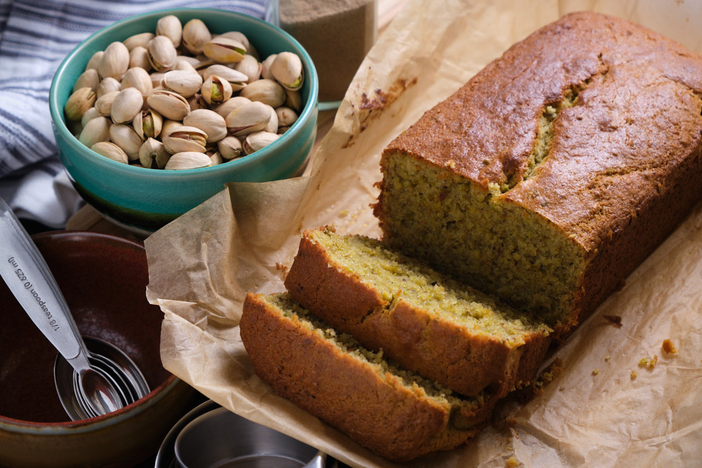

This is the third loaf I’ve baked in my short baking trajectory and I can say that it’s the most delicious one I’ve made so far. It doesn’t even matter that it’s gluten free because you can’t even tell! The flavors of the pistachio and cardamom are so present that they are just a joy to savor. I’m glad I tasted the original loaf from Ovenly and for Mirella Cheeseman‘s blog post on her interpretation. You can find it here.
If this recipe came out delicious for me, I’m sure anyone can make it as well. Feel free to increase the amount of sugar if you like your loaf on the sweeter side. I tried to decrease the sugar as much as possible while maintaining some sweetness. Let me know if you make it and how it turned out!
A link to the YouTube video: Pistachio Cardamom Loaf
Equipment
- Loaf Pan
- Bowls
- Whisk
- Parchment Paper
Ingredients
- 1 Cup Gluten Free All Purpose Baking Flour – Bob's Red Mill
- 1 Cup Pistachio Meal – (198g) Roasted and unsalted.
- 1 Tbsp. Ground Cardamom
- 1 Tbsp. Baking Powder
- 1/2 tsp Xanthan Gum
- 120 grams Sugar Not too sweet for my taste.
- 170 grams Softened Unsalted Butter – 1.5 Sticks
- 2 Lemons – Used for Zest
- 3 Large Eggs – At room temperature
- 1/2 Cup Sour Cream – I used full fat and at room temp
- 1/2 tsp Vanilla Extract
- 1/2 tsp Salt – I used "Diamond Crystal Kosher Salt" aka not as salty.
Instructions
- Preheat oven to 350°F | 177°C
- Grease loaf pan with butter and line with parchment paper. Grease again.
- Add to first bowl: Gluten Free flour, Pistachio Meal, Cardamom, Baking Powder, Xanthan Guam, and Salt. Set aside.
- Second bowl add: Sugar, lemon zest and softened butter. Mix well.
- Second bowl add: 3 Eggs and mix well.
- Second bowl add: Sour cream and vanilla extract. Mix well.
- Add first bowl with the dry ingredients to the second bowl with wet ingredients and mix very well.
- Pour into the loaf pan. Shake from sided to side to distribute the mix evenly. Pound flat on surface to settle as well.
- Place on the top rack of the pre-heated oven and bake for around 60 minutes. It's useful to confirm the temperature of your oven. I have a thermometer I bought for this.
- Check on the loaf and and stick a toothpick or slim knife in the middle. If it comes out clean, with no solids, then it's done.
- Let it cool for 15 minutes in the loaf pan.
- Leave loaf whole and slice only what you will consume -- that helps it stay fresher longer. Enjoy!